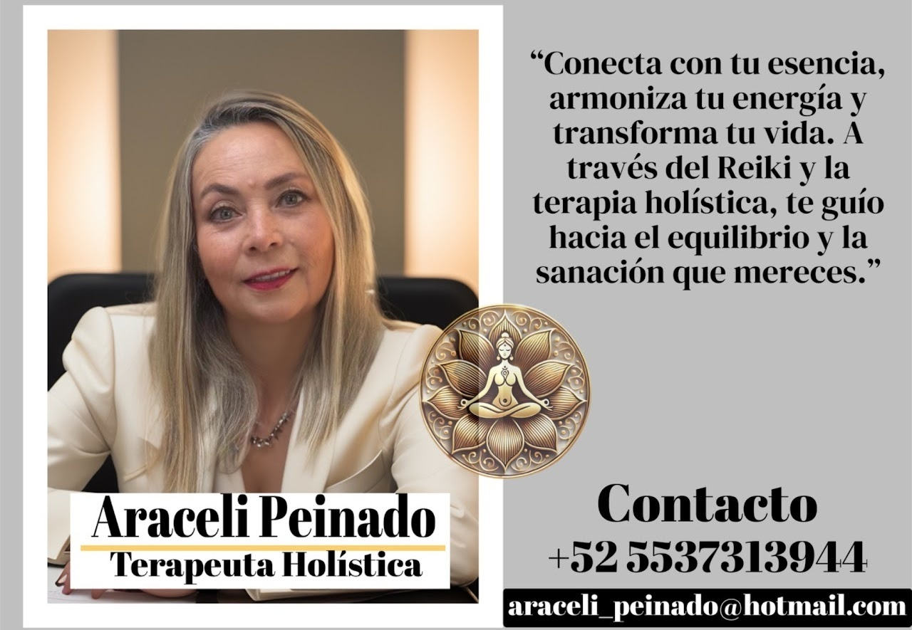

¿Quiénes somos?
Un colectivo de terapeutas, psicólogas, coaches y especialistas en bienestar, cada una con formación rigurosa en sus áreas: psicoterapia, tanatología, terapias holísticas, reiki, chakras y coaching de vida.
Nuestro Equipo
Profesionalismo al Servicio de tu Sanación Integral
Un equipo comprometido, apasionado y profundamente dedicado
a acompañarte en cada etapa de tu transformación.
Quiénes Somos
Nuestro equipo está formado por profesionales comprometidas con un objetivo común: acompañarte en tu proceso de sanación con ética, calidez y excelencia. Cada una aporta una visión única, enriqueciendo nuestra práctica desde distintas disciplinas del bienestar integral.
Un colectivo de terapeutas, psicólogas, coaches y especialistas en bienestar, cada una con formación rigurosa en sus áreas: psicoterapia, tanatología, terapias holísticas, reiki, chakras y coaching de vida.
Integramos metodologías respaldadas por la ciencia con la profundidad de las tradiciones espirituales, creando un enfoque completo que atiende cuerpo, mente y espíritu.
Creemos en el ser humano como un todo. Nuestras sesiones no solo abordan síntomas, sino las raíces profundas de cada situación, honrando tu historia y potenciando tu fuerza interior.
El Equipo
Rose acompaña procesos de sanación profunda relacionados con el duelo, las pérdidas y las grandes transiciones de vida. Su enfoque integra la tanatología con herramientas holísticas y espacios de contención grupal, sosteniendo emocional, energética y espiritualmente a las personas en momentos de dolor o cierre de ciclos.
Como facilitadora de círculos de mujeres, crea espacios seguros de encuentro, escucha y sororidad, donde las mujeres pueden sanar heridas emocionales y reconectar con su fuerza interna desde el acompañamiento colectivo y consciente.
Indicada para:
"Te acompaño en el camino de sanar tus heridas, transformar el dolor en aprendizaje y encontrar propósito en medio del vacío, para que puedas abrazar la vida con fuerza y serenidad."

Araceli acompaña procesos de sanación integral a través de la terapia holística y el Reiki, ayudando a las personas a reconectar con su esencia, armonizar su energía y restablecer el equilibrio entre cuerpo, mente y espíritu.
Como Maestra de Reiki, trabaja con la energía vital para liberar bloqueos emocionales, reducir el estrés, calmar la mente y activar los procesos naturales de autosanación, desde un enfoque amoroso, respetuoso y consciente.
Indicada para:
"Conecta con tu esencia, armoniza tu energía y transforma tu vida. A través del Reiki y la terapia holística, te acompaño hacia el equilibrio y la sanación que mereces."
Raquel acompaña procesos de sanación integral a través de la terapia holística y el trabajo consciente con los chakras, ayudando a las personas a reconectar cuerpo, mente y espíritu para recuperar el equilibrio interno y el bienestar emocional.
Identifica y armoniza los centros energéticos, liberando bloqueos emocionales que se manifiestan como cansancio, ansiedad, confusión o desconexión personal, desde un acompañamiento respetuoso y profundamente personalizado.
Indicada para:
"Descubre el poder de la sanación integral. A través de terapias holísticas y el trabajo con tus chakras, te acompaño a liberar bloqueos, armonizar tu energía y transformar tu vida desde el interior."
Lizette acompaña procesos de sanación emocional y mental desde una base psicológica sólida, integrando un enfoque holístico y humanista que considera a la persona como un todo: mente, emociones, cuerpo y experiencia de vida.
Brinda un espacio seguro y profesional para comprender el origen del malestar emocional, trabajar patrones de pensamiento, gestionar emociones y desarrollar herramientas internas para afrontar la vida con mayor claridad y equilibrio.
Indicada para:
"Explora tu camino hacia el equilibrio con el acompañamiento de una psicóloga y terapeuta holística comprometida con tu bienestar emocional y mental. Juntos, podemos transformar tus desafíos en oportunidades de crecimiento."
Angélica acompaña procesos profundos de sanación emocional y transformación personal, con un enfoque centrado en la salud mental, la consciencia emocional y el autoconocimiento como pilares del bienestar integral. Su trabajo se fundamenta en la psicoterapia, la neurociencia aplicada y el acompañamiento humano consciente.
Crea espacios terapéuticos seguros donde la persona puede sentirse escuchada, comprendida y acompañada sin juicios, favoreciendo procesos de cambio reales, sostenibles y alineados con la vida cotidiana.
Indicada para:
"Integro psicoterapia, neurociencia y consciencia emocional para acompañarte en un proceso profundo de transformación personal y bienestar integral."
Tu momento es ahora
Nuestro equipo está listo para acompañarte. Da el primer paso.